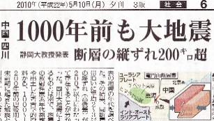
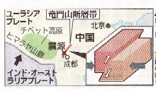

（214）スーパー竜門 解答
|
先月（A.F.10.5.8） 鯉魚躍竜門をUPした直後の5.10、毎日新聞の６面に目を惹く記事が掲載されていた。

地図の部分を拡大すると↓

なんと 龍門山に端を発した大断層まであったとは(゜０゜) そんなものあって欲しいものではないが、ちょうど登竜門をテーマに牌謎を作ったばかりだったので興味を惹かれた。
索子のメンチンを   マチでテンパイした。たとえメンチンでも が安めで が高め。ところが そのあと１枚 手変りしたところ、マチは同じ なのに が高め が安めとなった。 マチでテンパイした。たとえメンチンでも が安めで が高め。ところが そのあと１枚 手変りしたところ、マチは同じ なのに が高め が安めとなった。
しかし が安めになったと云っても でロンアガリした場合、手変わりする前にでロンアガリしたのと同じ得点となる。さてどのような変化であろうか、一例を示して欲しい。なお当カテゴリーの基本ルールはココに記載。（by UK）

|
むらまほ 投稿日：2010/06/06(Sun)
浅見さん、こんにちは。スーパー竜門が解けましたので解答します。
    
＝清一色・一盃口（跳満） ＝清一色・三暗刻（倍満）
ツモ 打 打
＝四暗刻（役満） ＝清一色・三暗刻（倍満）
索子のメンチンということで、高め緑一色だと思って見事にハマりました(^-^;
|
あさみ 投稿日：2010/06/06(Sun)
こんにちわ、むらまほ さん。
みごと正解です。(^-^)/
>高め緑一色だと思って
見事にハマってくれて ありがとう。(^-^ゞ
索子のメンチンにした甲斐がありました(^-^；
|